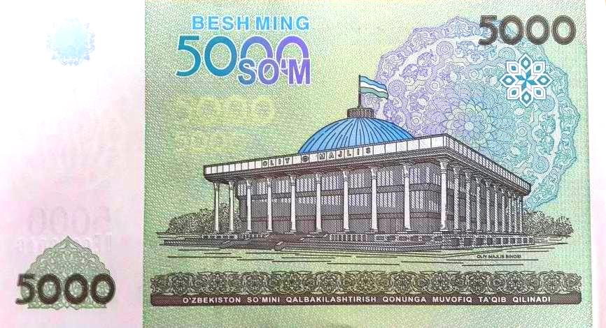

Как работают Центральный банк Узбекистана и денежно-кредитная политика
Центральный банк — эмиссионный банк государства: выпускает национальную валюту (сум), регулирует банки и проводит денежно-кредитную политику. Основан в 1991 году; новый закон от 11 ноября 2019 года усилил его независимость и закрепил главной целью ценовую стабильность. С января 2020 года введён режим таргетирования инфляции со среднесрочной целью 5%. Главный инструмент — основная ставка: с марта 2025 года держится на уровне 14% (без изменений и на заседании 16 сентября 2026 года). Сум был отпущен в свободное плавание 5 сентября 2017 года. По официальным данным Центрального банка.

Центральный банк — государственное учреждение в центре финансовой системы страны. Он выпускает национальную валюту, надзирает за банками и проводит денежно-кредитную (монетарную) политику. Ниже Центральный банк Республики Узбекистан и его политика изложены строго по фактам, на основе официальной информации Центрального банка.
Что такое центральный банк и за что он отвечает
Центральный банк Республики Узбекистан основан в 1991 году, головной офис — в Ташкенте. Это эмиссионный банк государства: он выпускает и регулирует сум в обращении, хранит золотовалютные резервы, регулирует и надзирает за платёжными системами и коммерческими банками. Центральный банк принимает решения самостоятельно и подотчётен парламенту (Олий Мажлису). Им руководит Правление; нынешний председатель Тимур Ишметов занимает должность с 11 декабря 2024 года.
Закон 2019 года и независимость
11 ноября 2019 года был принят новый закон «О Центральном банке Республики Узбекистан», заменивший закон 1995 года. Он усилил независимость Центрального банка и чётко закрепил его главной целью обеспечение ценовой стабильности (сдерживание инфляции), а также финансовой стабильности. Независимость означает, что Центральный банк принимает монетарные решения в рамках своего мандата, без политического давления.
Таргетирование инфляции
В январе 2020 года Центральный банк перешёл к режиму таргетирования инфляции. При этом режиме главным ориентиром становится достижение заранее объявленной цели по инфляции, и все инструменты направляются на это. Постоянная среднесрочная цель — годовая инфляция 5%. По данным Центрального банка и МВФ, общая инфляция, как ожидается, снизится примерно до 7% к концу 2026 года и достигнет цели в 5% в 2027 году.
Главный инструмент — основная ставка
Важнейший инструмент Центрального банка — основная (ключевая) ставка. Её повышение удорожает кредиты, охлаждает спрос и расходы и помогает снижать инфляцию; снижение удешевляет кредиты и стимулирует экономическую активность. С марта 2025 года основная ставка держится на уровне 14%; на заседании 16 сентября 2026 года Правление Центрального банка вновь сохранило её на уровне 14% — чтобы поддерживать положительную реальную ставку и вести инфляцию к цели.
Другие инструменты
Помимо основной ставки, Центральный банк влияет на ликвидность рынка и процентные ставки через нормы обязательных резервов (долю средств, которую банки обязаны держать), операции на открытом рынке (аукционы ценных бумаг и депозитов) и рефинансирование банков. При режиме свободно плавающего курса интервенции на валютном рынке ограничены и применяются лишь для сглаживания резких колебаний.
Свободное плавание сума (2017)
5 сентября 2017 года Узбекистан отпустил сум в свободное плавание и отменил двойную систему курсов (официальный и «чёрный» рынок), действовавшую многие годы. Курсы были унифицированы, обеспечен свободный доступ к валюте. Эта реформа заложила основу для современной денежно-кредитной политики и, позднее, для перехода к таргетированию инфляции.
Почему это важно для обычного человека
Решения Центрального банка напрямую влияют на ставки по кредитам и депозитам, стоимость сбережений и цены. Стабильная низкая инфляция сохраняет покупательную способность семей. Для повышения финансовой грамотности Центральный банк запустил в 2020 году платформу FinLit.uz; точные ставки и показатели регулярно публикуются на cbu.uz.
Источники
- Markaziy bank — 2026–2028-yillarga monetar siyosat asosiy yoʻnalishlari
- Markaziy bank — 2026-yil 16-sentabr: bazaviy stavka 14% da saqlandi
- Central Banking — Uzbekistan boosts transparency with new central bank law (2019)
- IMF — Uzbekistan: 2026 Article IV Mission concluding statement
- RFE/RL — Uzbekistan floats the som (September 2017)